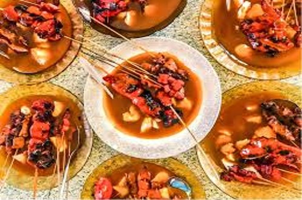

WHAT TO EAT IN MINDANAO?
Mindanao, the southernmost region of the Philippines, boasts a rich and diverse culinary heritage, influenced by indigenous, Muslim, and neighboring Southeast Asian cultures. Here are five iconic foods from Mindanao and where to find them:
CURACHA ALAVAR
A sizzling dish is made from chopped pork parts (usually the face and ears), seasoned with calamansi, onions, and chili, and often served on a sizzling plate. It's beloved for its combination of crispy, chewy, and tangy flavors. Originated in Pampanga and can be found in different restaurants.

SATTI
Satti is a local Zamboanga breakfast dish consisting of small skewers of grilled beef or chicken, served with a spicy, thick sauce and sticky rice. It’s similar to Malaysia’s satay, reflecting the influence of neighboring countries.

PASTIL
Pastil is a simple yet flavorful Maguindanaoan dish made of rice topped with shredded chicken, beef, or fish that’s cooked with soy sauce and spices, wrapped in banana leaves. It's often eaten as a street food or quick meal.
Piyanggang Manok
Piyanggang Manok is a Tausug (Muslim) dish from the Sulu Archipelago, featuring chicken cooked in a blackened coconut milk sauce, infused with turmeric, lemongrass, and spices. It’s known for its unique smoky, nutty flavor.
SINUGLAW
Sinuglaw is a fusion of two local favorites: sinugba (grilled pork) and kinilaw (raw fish marinated in vinegar and spices). This dish combines the smoky flavor of grilled pork with the tangy freshness of kinilaw, resulting in a delightful contrast of textures and tastes.